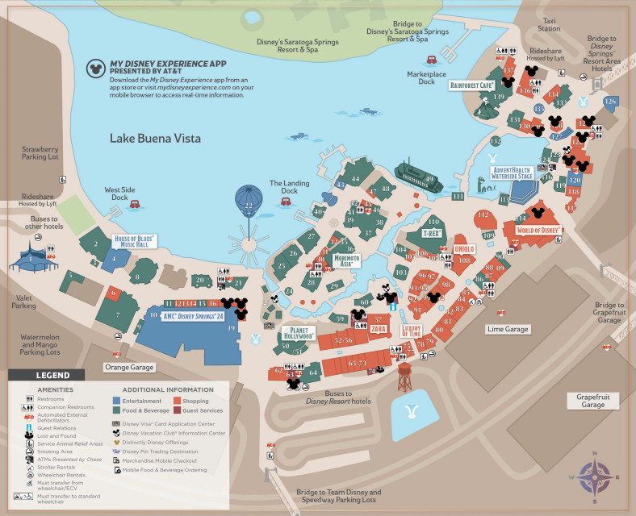

Home to the massive "Disney's Pin Traders" pavilion and the hidden boards of the Marketplace.

Tap map to view full size
Next to AMC.
Stroller rentals.
Next to Disney Style.
Usually Located at the front counter across from the Welcome Center.
Head inside and ask a cast memeber and will usually grab for you.
Located across from the large Sephora.
One near the pins, BEAWARE depending how busy my not be out, but look out for cast members with lanyard or pouches.
Located at the desk were they do customizable merchandise.
Located in the back room at the register.
Located in outside of Days of Christmas depnding of weather.
Tucked away in corner next to Tren-D enter from outside.
Two Locations inside, Run Disney merchandise and register of the Home Decor section.
Of course they have a Board, it's the pin trading store.
What are you seeing in the park today? Share board updates below!
*Please keep chat friendly. Messages are public.
Location: The Hub (statue area) & Main Street.
Custodial CMs in Magic Kingdom are famous for having the best pins. Look for them sweeping near the Partners Statue.
Location: The tunnel entrance under the train station.
CMs standing at the turnstiles or just inside the tunnels often wear lanyards.
CMs can be at each of these location just keep a eye out for landyards and pin pads!